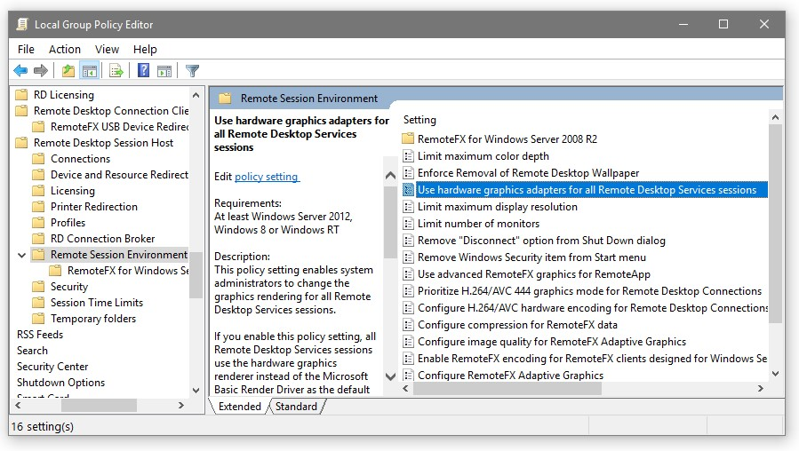

HWA schlägt bei RDP fehl
Hardware-Beschleunigung schlägt bei Remote Desktop (RDP) auf Windows fehl
Produkt: Emby Server
Betroffene Plattformen: Windows 8.1, Windows 10, Windows Server 2016, Windows Server 2019
Betroffene Hardware: Intel QuickSync, AMD AMF, DXVA2 und D3D11VA Codecs
Symptome
Wenn Sie den Emby Server so konfiguriert haben, dass er eine hardwarebasierte Video-Beschleunigungsmethode verwendet, die auf Microsoft Direct3D basiert, können Sie fehlerhaftes Verhalten oder vollständiges Versagen der hardwarebeschleunigten Videoverarbeitung erleben, wenn Sie sich über die MS Remote Desktop Connection, auch bekannt als RDP, am Computer mit Emby Server anmelden.
Lösung
Um dieses Problem zu vermeiden, müssen Sie die Konfiguration des RDP-Session-Hosts auf dem Computer, auf dem Emby Server läuft, ändern. Dies kann über eine Windows-Gruppenrichtlinieneinstellung erfolgen, indem Sie die folgenden Schritte befolgen:
- Öffnen Sie den 'Lokalen Gruppenrichtlinien-Editor' über eine der folgenden Methoden:
- Öffnen Sie Windows Einstellungen und geben Sie 'group' in das Suchfeld ein
- Öffnen Sie die Systemsteuerung und geben Sie 'group' in das Suchfeld ein
- Start > Ausführen > geben Sie 'gpedit.msc' (ohne die Anführungszeichen) ein und klicken Sie auf 'OK'
- Navigieren Sie im linken Baum:
- Computerkonfiguration
- Administrative Vorlagen
- Windows-Komponenten
- Remotedesktopdienste
- Remotedesktop-Sitzungshost
- Umgebung der Remote-Sitzung
Im rechten Bereich finden Sie den unten hervorgehobenen Eintrag ('Hardwaregrafikadapter für alle Remotedesktopdienste-Sitzungen verwenden')

- Klicken Sie mit der rechten Maustaste auf den Eintrag und wählen Sie 'Bearbeiten'
- Ändern Sie in der Dialogbox die Richtlinieneinstellung auf 'Deaktiviert' und klicken Sie auf 'OK'
- Starten Sie den Computer neu
Hintergrund
In neueren Windows-Versionen kann der RDP-Dienst Video- und Grafik-Hardwarebeschleunigung für 2D- und 3D-Komposition der Desktops von Remotesitzungen verwenden; in den neuesten Versionen kann sogar H.264-Video statt GDI-Anweisungen zur Übermittlung des Desktops an den Client verwendet werden.
Wenn diese RDP-Funktionen aktiviert sind und ein Client sich über Remote Desktop verbindet, blockiert der RDP-Session-Host alle D3D- und DXGI-Anwendungen für jede andere Nutzung als die der lokalen Sitzung.
Unter diesen Umständen und wenn Emby Server in einer lokalen Sitzung läuft, die nicht diejenige ist, in die über RDP eingeloggt wird, kann es vorkommen, dass D3D9-basierte Hardwarebeschleunigungen weiterhin funktionieren (manchmal mit Mängeln), da D3D9 immer in einem Benutzersitzungs-Kontext verankert ist.
Hardwarebeschleunigungen basierend auf D3D11 werden in der beschriebenen Situation niemals funktionieren.
Betroffene Hardware-Codecs
Direct3D 9
QuickSync Video-Decodierer (ohne D3D11 im Namen) QuickSync Video-Encoder (ohne D3D11 im Namen) AMD AMF Encoder DXVA2 Decodierer
Direct3D 11
QuickSync D3D11 Video-Decodierer
QuickSync D3D11 Video-Encoder
D3D11VA Video-Decodierer